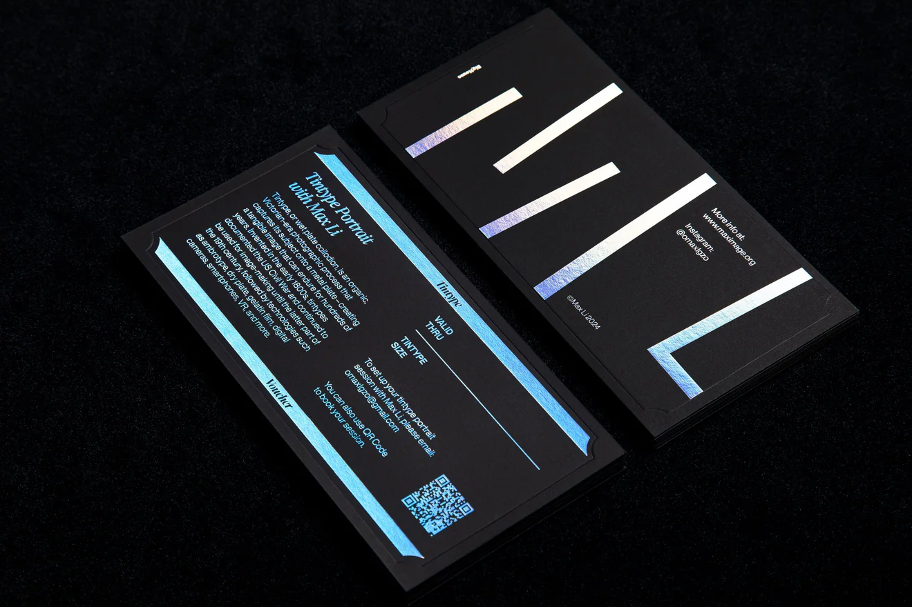
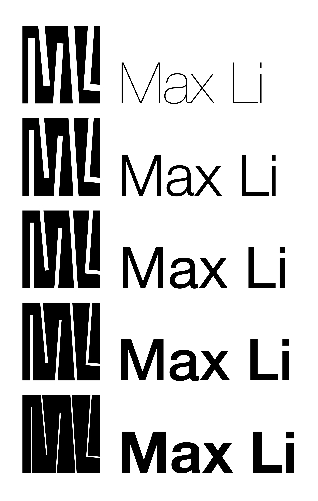
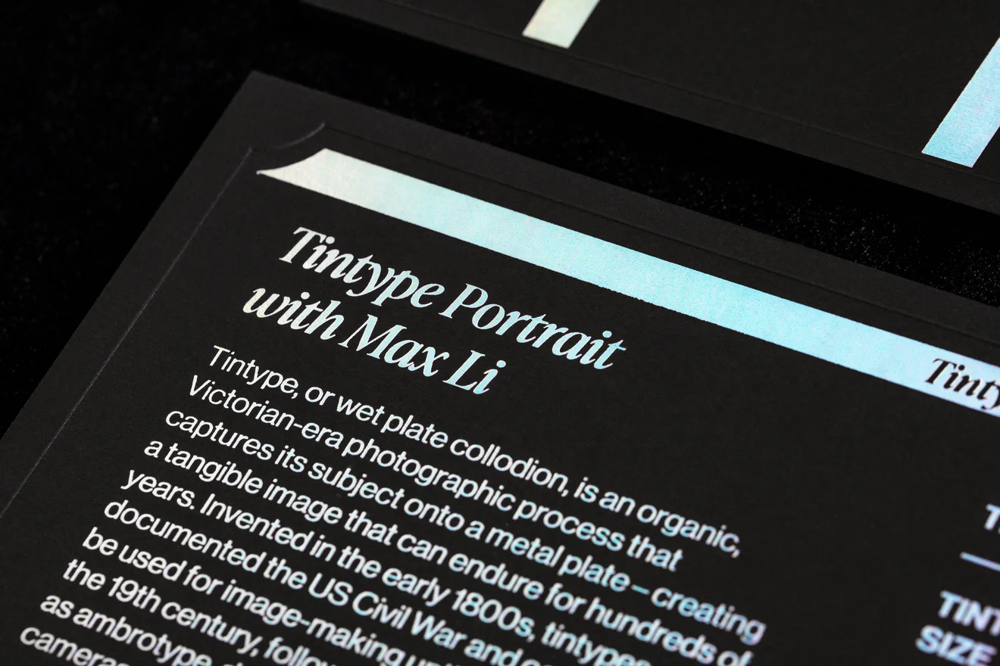
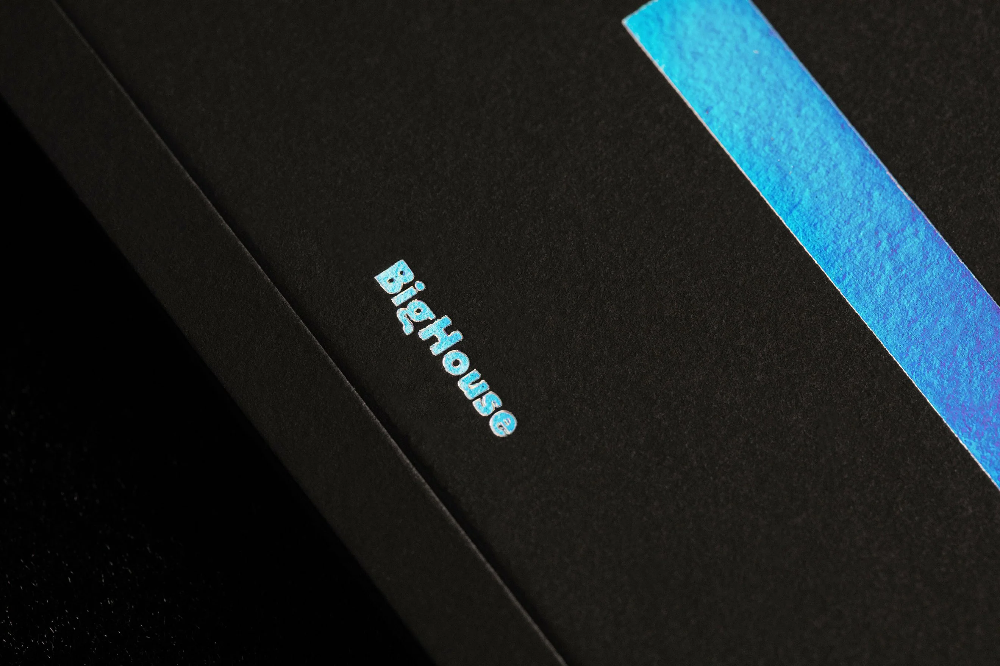
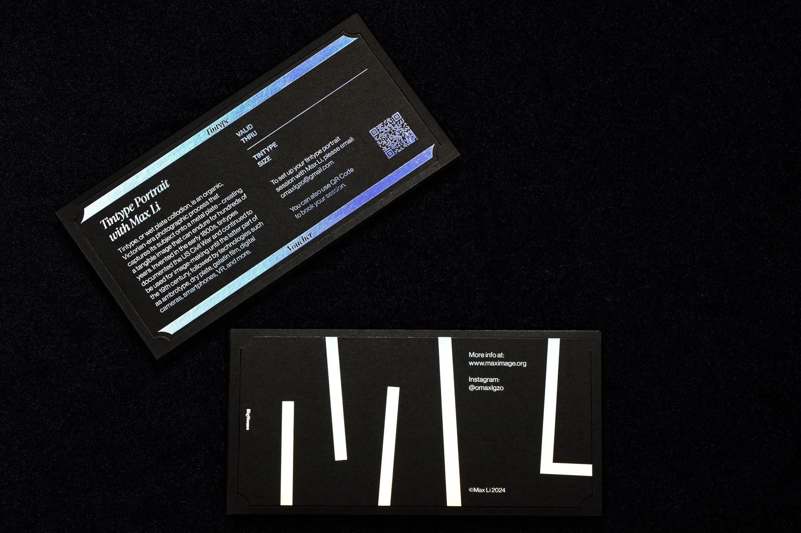
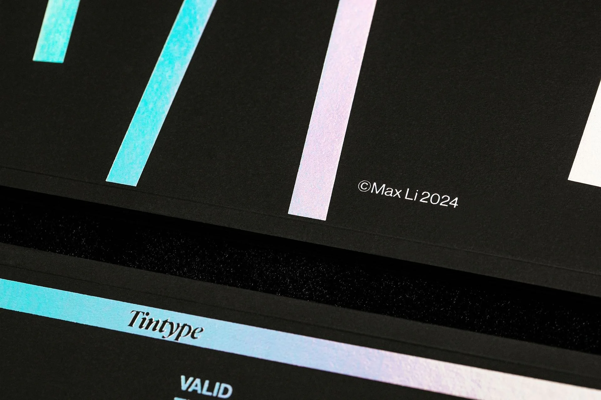
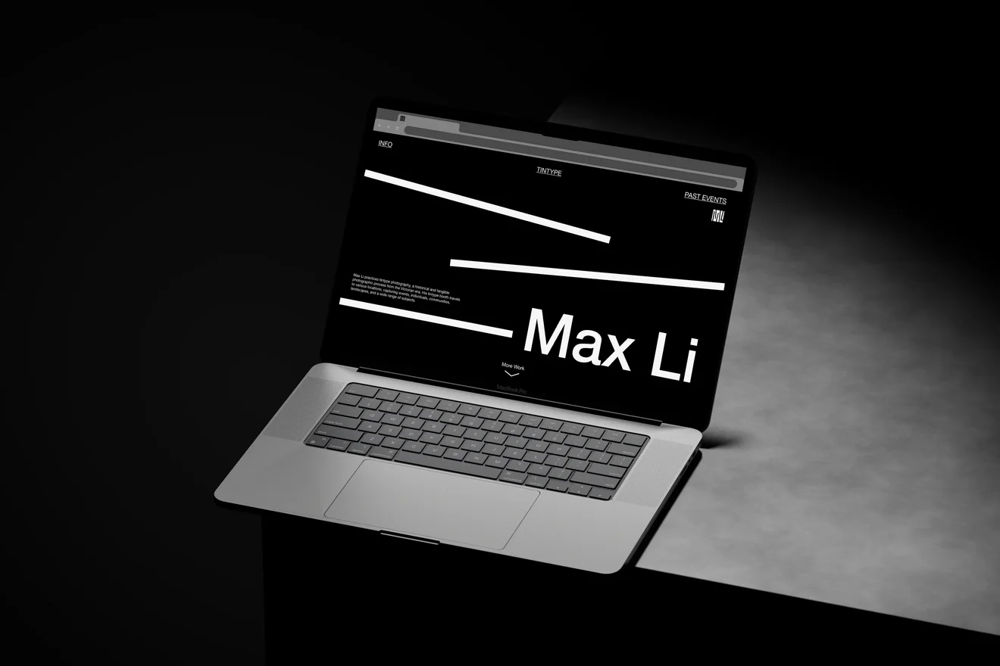
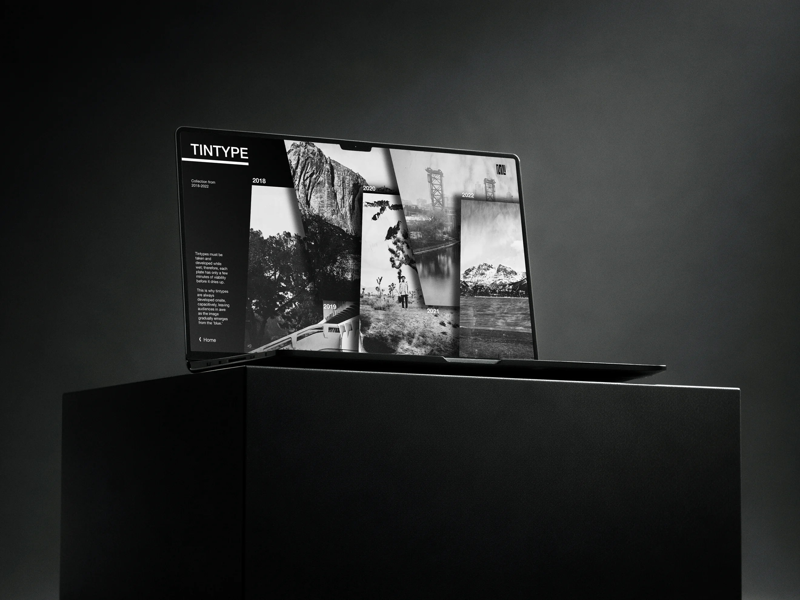
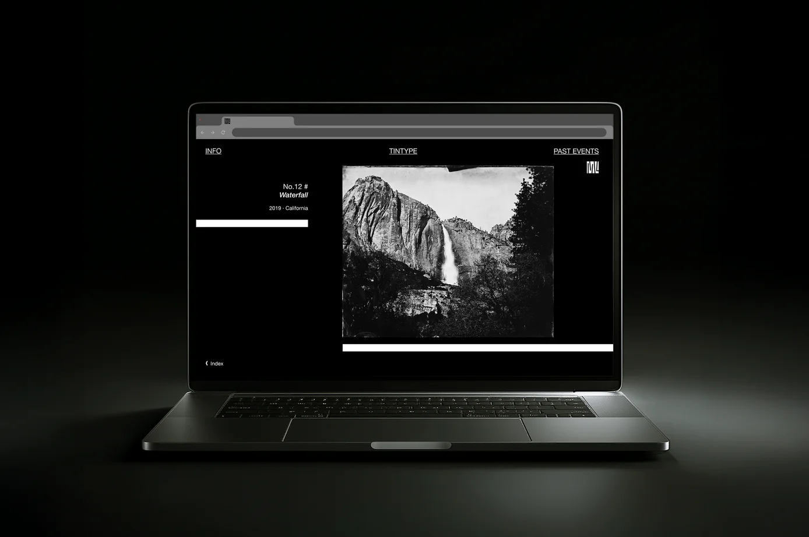

Identity Design for Tintype Artist Max Li
A tintype photographer’s identity and print system.

Branding
Identity Design
Editorial Design
Web Design
Client
Max Li
Employer
Big House Studio
Summer 2024 Internship
Year
2024
Description
This identity project was developed for a Chicago based tintype photographer during an internship at Big House Studio. The visual system is centered on a logo derived from the structure of photo storage shelves, abstracted and merged with the artist’s initials, M and L. The modular form extends beyond the mark into a flexible grid system that guides layout, typography, and composition across applications. High contrast materials and reflective finishes reference the physical qualities of photographic plates and the tintype process itself, reinforcing a tactile and archival sensibility. Applied across business cards and printed materials, the identity balances restraint and experimentation, creating a cohesive system that supports the artist’s practice while remaining adaptable across formats.
Honoring a Historic Craft
A tintype photographer needed an identity system based on the craft and history of tintype.
A Minimal, Scalable System
A minimal and scalable design system built from a logo derived from photo storage shelves, extending into a flexible grid across print and web.
The logo abstracts the structure of photo storage shelves and merges it with the initials M and L.




BUSINESS CARDS
High contrast materials and reflective finishes reference the physical qualities of photographic plates.


WEBSITE

